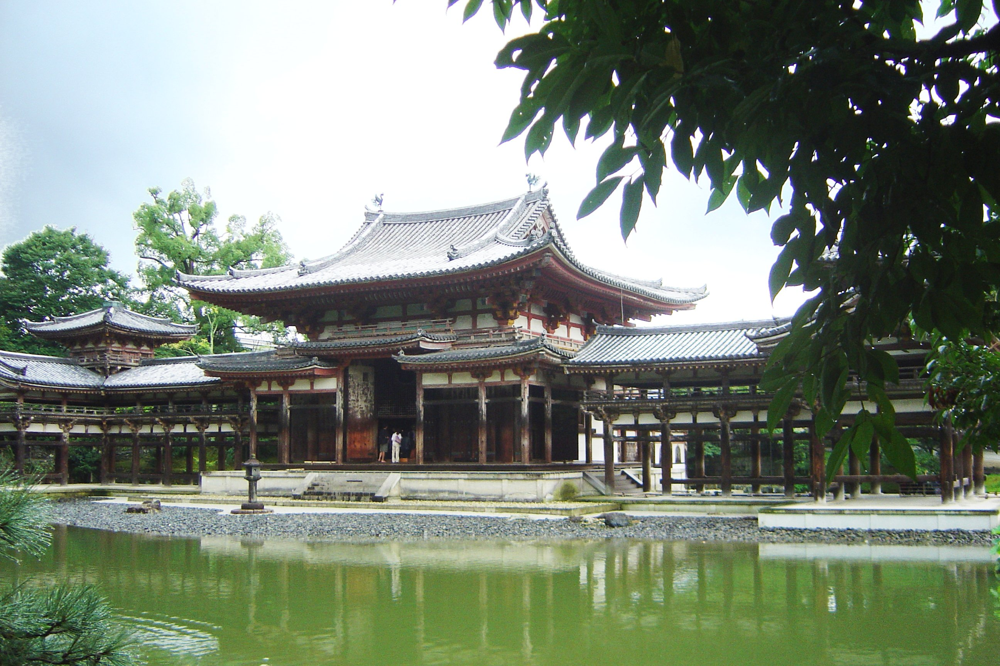
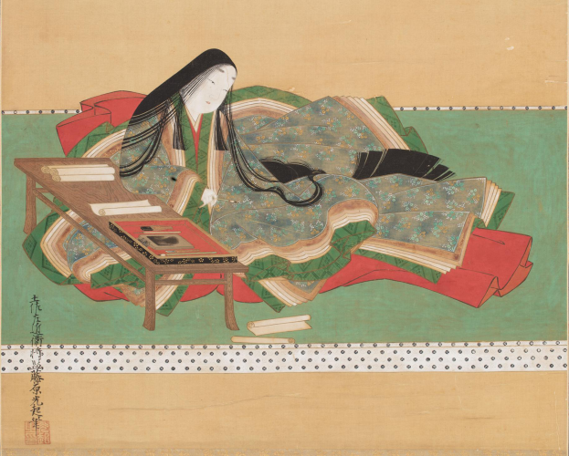
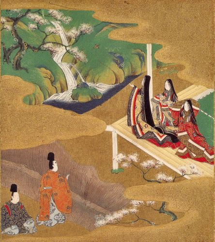
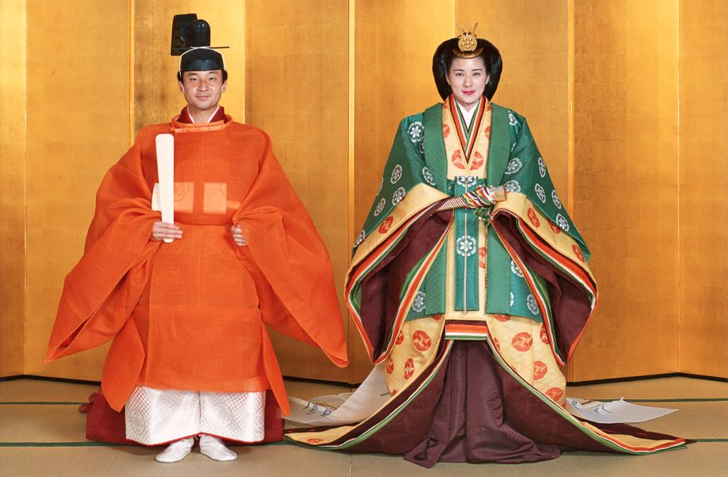
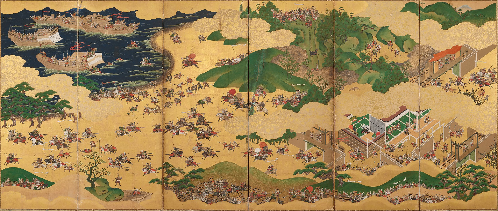

The New Capital and Court

The Phoenix Hall of the Byodo-in in Uji, built in 1053.
Emperor Kanmu moved the capital from Nara to Heian-kyo in 794, and it was Heian-kyo that would remain the imperial capital of Japan for over a
thousand years until 1868. The "Heian" (平安) in Heian-kyo means something like "peaceful/tranquil", but the capital came to be colloquially referred to
as Kyoto ("capital city"). The city was laid out in a grid pattern and, like Heijo-kyo before it, was based on the Tang dynasty capital of Chang'an. The
city was thought to be well-placed, at least according to the tenets of Chinese geomancy, known as feng shui. This was the belief of the nature of
powerful natural forces and how to balance them to achieve harmony. This relates to the concept of Yin and Yang, two opposing forces but harmonious when a
balance is achieved between them. The grid system of the city's streets, with ten wide avenues stretching east-west and more stretching north-south, with a
wide thoroughfare running unobstructed from the Imperial Palace in the north to the city's entrance gate in the south, acting as the axis of symmetry. The city
was divided by this thoroughfare into the left city and the right city, though confusingly the left city was located to the east and the right city to the west.
This makes sense when one considers the perspective of the Emperor in the Imperial Palace, who was meant to face south towards his subjects. This division extended
to the civil government hierarchy where we see the highest posts in the Court being the Minister of the Right and the Minister of the Left. The Left version of a post or
government bureau was seen as the senior and higher ranking one compared to its right equivalent.
It was early in the Heian period when the Fujiwara family, whose founder Kamatari was a key figure in the Taika reforms of the 7th century, begin to assert their position
at Court and become the true power behind the throne. This was accomplished through the same means utilised by the Soga clan of the Asuka period, with Fujiwara daughters
marrying into the Imperial line and becoming consorts to the Emperor. This reached a point where many emperors had a Fujiwara mother, and this firmly entrenched the position
of the Fujiwara as the most powerful clan at court. They reached new heights when Fujiwara no Yoshifusa became the Sessho (Regent) for the young Emperor Seiwa, his grandson,
in 858. The positions of Sessho and Kampaku (both roles being that of a Regent, the latter being for an adult emperor). would be filled by the most powerful Fujiwara statesman
throughout the period until their eventual decline in the late 11th and early 12th centuries. Along with the regency, the posts of the Minister of the Left and Minister of the w3-right
were also occupied by Fujiwara kinsmen, sometimes those from a differing branch of the family.
The geomantic ideals for the city also extended to its surroundings. One of the beliefs of feng shui was ki, which was a kind of life force. It was generally accepted by
geomancers of the day that ki moved at a relatively constant speed from the northeast to the southwest. It was believed that it could be polluted by impure acts and malign forces and
could likewise be purified. The surroundings of the new capital were mountainous, and this was a strategic advantage and well as a spiritual one, as it was thought the kami divinities
of the mountains afforded protection to the city. This was further strengthened by the presence of a great many Shinto shrines and Buddhist temples around the city. It is fitting to mention here two
important figures, Saicho and Kukai. Both men were devout Buddhist scholars who travelled to China in the early 9th century to further their studies. They were exposed to new forms of Buddhist ideas
and returned to Japan to establish their own sects. Saicho founded the Tendai school of Buddhism and was the founder of the Enryaku-ji temple complex on Mount Hiei, a mountain located to the
northeast of the capital, purifying the ki that entered the city. Kukai also founded his own Buddhist sect, Shingon Buddhism, which had a marked emphasis on ritual, and established himself at Mount Koya in modern day Wakayama prefecture.
He is buried there, but followers of his school believe he is in a deep state of meditation awaiting the arrival of the Future Buddha. Some attribute the creation of the kana syllabary system,
which is the base writing system for Japanese today, though this is according to legend. The kana script did emerge during this period, and it was primarily used by women at court as the Chinese
script was taught to male courtiers only as it was seen as above the knowledge of women. Despite this, women would play a crucial role in the literary world of the Heian period, which is the world that
the Heian period is most remembered for.
Heian Literature: "The Tale of Genji", "The Pillow Book", and Life at the Court.
The Heian period is seen as a golden age in Japanese history, often being described as the classical age. The period is significant in cultural history, especially in the realm of literature. The Heian period
was a time when Japan was heavily influence by Chinese culture, but it was during this time that the cultural imports from China began taking a more native Japanese touch. This can be seen with the emergence of
the kana syllabary system, which allowed Japanese to be written without Chinese characters. It was also ideal as the characters could be written comfortably in a cursive style. As has been mentioned, the new
script was primarily used by women at court. So it is fitting that the most famous works of the Heian period, even of Japanese history as a whole, was written by ladies at court. They are written in an exquisite style
and document much of what we know about life at Court during the Heian period to the most subtle details, from the perspective of women. Less is known about ordinary life for those outside of the nobility, as literacy
did not generally go any further than the Court.
Women of the nobility lived confined lives, being physically hidden from the outside world. It was the custom of the day that women were not meant to be seen by men outside their immediate family. When women conversed with a man
they did so with either a folding screen, curtains or even standing curtains in between to hide themselves from their guest. This extended verbally with the woman not speaking and communicating with their guest through one of their gentlewomen
or through messages. They even held up their fan to their face to conceal their visage. They would do this on the rare occasions they travelled away from home, usually for a festival or pilgrimage to a shrine. The stories of the period tell how
some men became infatuated with a woman after accidentally gazing upon them when the woman had her guard down. Despite the confining nature of their lives, these women who dedicated much of the writing that we have of Heian life are able to provide
incredibly vivid detail of their day.

Murasaki Shikibu

Tale of Genji Chapter 5: "Wakamurasaki".
Genji sees Murasaki for the first time
The definitively most iconic work of the Heian period is the Tale of Genji, written sometime around 1000 by the lady-in-waiting Murasaki Shikibu. She served as a lady-in-waiting of the Empress Shosho, who was married to Emperor Ichijo.
The Tale of Genji is fictional tale that centers around the protagonist Genji, the son of an emperor by one of his lesser consorts. Given his mother's low rank and the pressure by another consort, the Kokiden consort, he is excluded from
the Imperial line and given the Minamoto surname (hence Genji). He is described as being a paragon and being the embodiment of a perfect Heian noble. He is exceptionally bright in his youth and impresses everyone with his knowledge of poetry and the Chinese
classics. He is also exceptionally handsome. Genji's mother dies when he is three years old and Genji doesn't remember much about her. A envoy from Korea gives Genji the nickname of the "Shining Prince". When he comes of age at 12, he is married to Aoi, the
daughter of the Minister of the Left. Throughout the next few chapters, Genji has many love affairs with many different women. Genji was told that one of his father's consorts, Fujitsubo, looked very much like his mother. As a result, Genji was particularly
attracted to her, with the text revealing without much warning that Fujitsubo was pregnant with Genji's son. On a trip outside the city to visit a healer, he sees in a residence a young girl known as Murasaki, who he becomes intensely attracted to once he learns that
she is the niece of Fujitsubo. Genji takes the girl into his household, where she is raised and eventually becomes Genji's wife later in the story. Genji's son with Fujitsubo eventually becomes the new emperor later on. Genji gets caught with one of the emperor's concubines.
This emperor's mother was the Kokiden consort, who calls for Genji to be punished. Genji is exiled to Suma and later Akashi, where he fathers a girl with a daughter of a man known as the Akashi Novice. Genji eventually returns from exile.
The rest of the book after this point is when Genji is in middle age. He rises to the top of the Court hierarchy to be appointed an Honorary Retired Emperor. He builds a new residences with four wings, moving women he had affairs with into each of the wings. Towards the end of
Genji's life, his wife Murasaki dies and Genji is left heartbroken. He eventually becomes a Buddhist monk where his death is hinted at with the title of a blank chapter ("Vanished into the Clouds"). The remaining twelve chapters details the story of two of Genji's descendants,
Prince Niou and Kaoru. They rival each other over two sisters who live in Uji, south of the capital. It is revealed that they have another sister known as Ukifune, who they also compete over. In order to escape their affections, Ukifune attempts suicide by jumping into the Uji river,
but she survives and becomes a Buddhist nun. The 52nd and final chapter, entitled "The Floating Bridge of Dreams", sees her refuse to meet Kaoru when he finds and visits her. The tale ends abruptly and without a proper resolution, which leads some to believe that it was left incomplete.
The Tale of Genji reveals much about life in the Heian period. Vivid descriptions are given of the clothing that the characters wear. Women in particular wore an outfit known as a junihitoe, which was composed of many layers of silk robes of varying colours and shades. The colours
included was chosen according to the season, with some colors being unsuitable to wear off-season. Those in mourning wore grey robes, with darker shades being worn when the deceased with closer in relation to the wearer. Women wore white make-up and painted thick black eyebrows on their foreheads.
The custom of ohaguro was followed by women, which was the blackening of the teeth. This actually protected a woman's teeth from decay. On the other hand, men wore an outfit known as a sokutai. It was comprised of an outer robe and inner robes, gathered trousers, lacquered shoes and a
lacquered cap, commonly a eboshi hat.

Emperor Naruhito and Empress Masako wearing a sokutai and junihitoe, respectively, on their wedding day.
This was the typical outfit for a Heian courtier.
A great deal of emphasis is placed on poetry. A Heian noble was expected to know many poems from a wide range of collections and quote appropriate poems when the situation arised. This is very evident in the Tale of Genji where the characters allude to poems when writing poetry of their own.
Much communication between, for example, Genji and his lovers is through the medium of poetry. Some poems are perceived as being especially moving and we see some characters weep as a result. Throughout, there is a constant mood of melancholy shown by the characters. This sensitivity was an
aesthetic idea known as wabi sabi, which is a sense of sadness at the impermanence of things. An example of this is the sadness of some characters at the end of spring, when the beloved and characteristically Japanese image of cherry blossoms ceases as summer time arrives.
As well as the Tale of Genji, there is a diary of interest written at the same time as the Tale of Genji. The Pillow Book was written by another court woman named Sei Shonagon, who documented stories and details about events in her life throughout the 990s. She describes many stories of her poetic
skills and how she impressed the Empress and other court nobles with her poetic wit. There are also fragments of what seem to be a love tale of her own throughout the text. She also has lists of random things, such as mountains, placenames in poetry, or terrifying things. There are also descriptions of
of certain types of people, such as "People of rough speech". There is even the story of why the diary exists. The Empress was gifted papers and stated that officials at the Court were copying the Chinese Records of the Historian and asked what should they write on the gifted papers. Sei suggested
that the paper should be a pillow, the meaning of this suggestion being unclear (she was possibly alluding to a no longer extant poem or text). The Empress gifted her the papers and she wrote her diary with them. The Pillow Book is remembered for providing a whimsical account of Heian life and for the
interesting observations that Sei provides.
The End of the Heian Period and the Rise of Samurai Governance
The Fujiwara clan would even decline in influence after the tenure of Fujiwara no Michinaga, who was the most influential figure at court at the time of the writing of the Pillow Book and the Tale of Genji. Later emperors began resisting the influence of the Fujiwara clan and were significantly more politically
ambitious. Emperor Go-Sanjo was the first emperor for centuries not to have a Fujiwara mother, and he took measures to attack their power. One of the measures was the establishment of the Insei system, the cloistered emperor system in which an emperor would abdicate in favour of his heir and take Buddhist
vows though would still wield power. The first cloistered emperor came in 1086, with Emperor Shirakawa becoming the first of many emperors to take up this role. This system was effective until the 1150s, when Taira no Kiyomori would rise to power and consolidate his power after the Hogen and Heiji rebellions, which
were both succession disputes. Taira no Kiyomori would be the most powerful figure at court for the next two decades.
The rise of Kiyomori was the result of a process that took place throughout the Heian period. The private estates (shoen) that emerged during the Nara period began increasing in size and number. The owners of these estates were mainly provincial leaders as opposed to the nobles at court. Many of these were members
of branches of the Minamoto and Taira clans, which had estates all across the country. During the Nara period, there was a series of campaigns in the east of Honshu against a people known as the Emishi, who may have been descendants of the Jomon people of prehistoric times. The Imperial Court did not have a standing
army of its own and instead relied upon the services of the various clans in the provinces to drive the Emishi further eastwards. The Emishi were fully pushed off the main island of Honshu to the island of Hokkaido in the eleventh century. The fact that these provincial clans, particularly those in the east, provided for the
military needs of the Imperial Court made them seasoned warriors. By the 12th century, the Taira clan was powerful enough as a warrior family that they were able to flout central authority and forcefully assert themselves to control the Court. These warriors are the early form of the warriors that today are known as samurai.
The warrior class in society were now the de facto ruling force of the country, as they were able to maintain order in their provinces and control over their estates. It was the Minamoto who were the primary rivals to the Taira clan, and Kiyomori was able to defeat and reduce them in 1160. Being virtually unopposed, Kiyomori
persuaded the Emperor Takakura in 1180 to abdicate in favour of his own grandson, the two-year-old Emperor Antoku. Takakura's son, Prince Mochihito, in response plotted with the Minamoto against the Taira. Unfortunately for him, the plot was revealed and Mochihito was killed alongside Minamoto no Yorimasa at the Battle of Uji in 1180,
the first battle in what became known as the Genpei War.

Folding screen depicting the Battle of Ichi-no-Tani
The Genpei War would last for five years. It's story is popularly told by the 14th century Tale of the Heike, which documents the Taira (Heike) clan's rise and fall. After the Battle of Uji, Kiyomori would move the capital to Fukuhara on the coast of the Inland Sea. The Minamoto clan was primarily led by Minamoto no Yoritomo and
his brother Yoshitsune. Kiyomori died a year later in 1181, so the Taira was led by his son Munemori. The Minamoto initially faced defeats but soon the tide turned in their favour and they were able to defeat the Taira at pivotal battles such as the Battle of Ichi-no-Tani in 1184. The last battle of the war was the Battle of Dan-no-Ura,
which was fought in the Shimonoseki Straits between the islands of Kyushu and Honshu. The Taira fleet in the straits were able to inflict considerable harm on the Minamoto fleet, but the tide turned and the Minamoto fleet bore down on the Taira fleet. According to the Tale of the Heike, the seven-year-old Emperor Antoku was jumped with his
grandmother into the waters and drowned, and many of the Taira warriors followed them. The Minamoto had won the war and were now the single most powerful clan in Japan. Yoritomo would betray his brother Yoshitsune and have him hunted and killed in order to secure leadership of the Minamoto. Yoritomo would base himself away from Kyoto in
Kamakura, which was located in the Kanto plain near modern-day Tokyo. In 1192, he would become the first shogun of Japan, establishing the Kamakura shogunate. This shogunate, the first of three in Japanese history, would rule until 1333. The Emperor was now reduced to being only a figurehead. This was the beginning of feudal Japan.